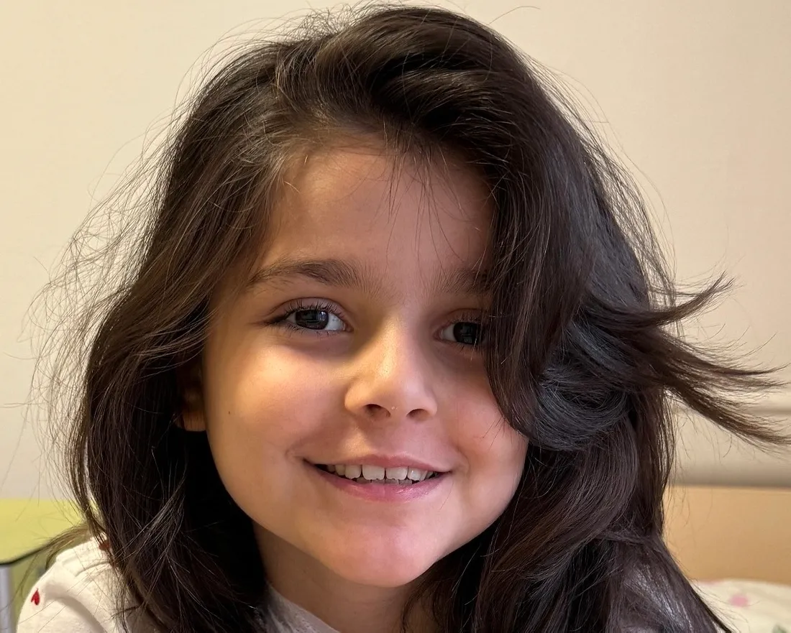

благотворительный фонд
Сложный случай
Надя лечится второй раз: уже восемь месяцев в больнице, пять курсов химиотерапии, 3,5 года с начала болезни. Чтобы в этот раз (и, хочется верить, навсегда) побороть болезнь, девочке нужен препарат «Блинцито».

Надя, 9 лет, республика Дагестан. Диагноз – лимфобластный лейкоз. Требуется иммунопрепарат «Блинцито»
У девятилетней Нади острый лимфобластный лейкоз. Девочке было пять, когда она заболела. Сначала появились синяки на руках. Родители подумали, что Надя ударилась — она тогда училась кататься на велосипеде и часто падала. Но синяки распространились по всему телу, а потом добавились и другие симптомы: девочка, прежде активная, стала уставать, спать днем, капризничать. Это насторожило родителей. Сдали анализ крови, а он выявил бластные клетки.
Болезнь развивалась стремительно. Как потом врачи объясняли родителям, у Нади произошел молниеносный выброс раковых клеток. За первые две недели болезни поражение костного мозга составило 98%, а крови — 99%. Случай Нади был крайне сложным, и девочку из родного Дагестана срочно отправили в Москву, в Центр имени Дмитрия Рогачева. Лечение помогло сразу: после первого блока химиотерапии Надя вышла в ремиссию. Еще 2,5 года «химии» потребовалось, что закрепить результат, и вот заветное «У вас прекрасные анализы. Больше не приезжайте, все хорошо».
Но в июле прошлого года болезнь вернулась. Елизавета, мама Нади, сразу узнала знакомые симптомы: «Внешне это никак не проявлялось — синяков не было. Но как-то утром она ко мне подошла и говорит: “Мама, ты не ругайся, я только проснулась, но я еще хочу спать. Можно я буду спать?” Она это сказала, и мне стало тревожно».
Когда рецидив подтвердился, Надю, как и в первый раз, госпитализировали в Центр имени Дмитрия Рогачева. Снова жизнь в больнице, блоки «химии» — только уже высокодозной. И снова сложный случай: у Нади после химиотерапии развился сепсис — сначала один, потом второй. Врачи сказали, что, если продолжать «химию», будет третий, и его девочка может не перенести. Было решено поменять терапию и перейти на лечение иммунопрепаратом «Блинцито», при котором риск развития таких осложнений меньше. Дело в том, что химиотерапия действует слишком агрессивно, уничтожая не только опухолевые клетки, но и некоторые здоровые. Но препарат «Блинцито» работает иначе: он направляет клетки иммунной системы (Т-лимфоциты) именно на мишень — опухолевые клетки, а здоровые практически не страдают. При этом в отличие от химиопрепаратов «Блинцито» можно совмещать с любыми антибиотиками, а значит, одновременно лечить инфекционные осложнения, которые часто возникают в ослабленном «химией» организме.
Надя с мамой в больнице уже восемь месяцев. Девочка мужественно переносит все неприятные процедуры и запрещает себя жалеть — не любит этого. Мама говорит: «Нам капают тяжелую “химию”, а она прыгает, как зайчик, по палате. Она всегда радостная».
Дома Надю ждет семья. Она у нее большая: папа и три сестры — старшая, Настя, и младшие, Саша и Катя. Мама с гордостью говорит: «У меня все четыре — девочки». И добавляет, что имена дочкам выбрала самые нежные: «Потому что они принцесски. У нас и дома все такое розовое, красивое, в цветочках и пони». Сестры хорошо ладят, а погодки Надя и Саша вообще лучшие подружки: везде вдвоем, даже в школе за одной партой сидят. Саша особенно ждет возвращения Нади.
Мама много рассказывает про Надю: лучше всех в семье шутит, очень добрая, любит наряжаться и делать прически, а еще потрясающе рисует. Когда делится мечтами девочки, начинает смеяться. Во-первых, Надя, конечно же, не останется жить с родителями, а переедет в Корею, которой увлечена. Во-вторых, заработает много-много денег. В-третьих, непременно купит папе машину, а маме — квартиру. Так и говорит: «Буду вас обеспечивать!» По словам Елизаветы, Надя всегда такая: за всех переживает, со всеми делится, готова последнее отдать.
А еще у девочки есть планы на самое ближайшее будущее — как можно скорее вернуться домой, к любимому папе, Насте, Саше и Кате, в розовую комнату в цветах и пони. И этим планам мы с вами можем помочь осуществиться. Для этого необходимо собрать средства на курс жизненно важного для Нади препарата «Блинцито»: нужно 10 флаконов лекарства общей стоимостью 1 613 779 рублей. Часть средств уже собрали, но нужно еще. Мы очень надеемся на вашу поддержку!
Помочь НадеЦель сбора: оплата препаратаДиагноз: лимфобластный лейкоз 581 383 ₽ из 1 613 779 ₽ Осталость собрать: 1 032 416 ₽ |
||
|
Благотворительный счёт:
1111 1111 1111 1111 |
||
О нашем фонде
Мы — это фонд «Жизнь ребёнка» в самом широком смысле. Благотворители, волонтеры, врачи, доноры, попечители, все те, кто делает возможной помощь больным детям.
Кроме сотрудников, в «Подари жизнь» есть совет фонда, попечители, врачи и амбассадоры. Рассказываем в деталях, кто входит в эти структуры, чем они занимаются и как помогают фонду работать.
«Жизнь ребёнка» учрежден 26 ноября 2006 года. Офис фонда находится в Москве, у нас нет филиалов, отделений и представителей в регионах России. Более 90 000 детей получили помощь за все время работы фонда.
Мы хотим, чтобы в России любой ребенок или взрослый до 25 лет с онкологическим или гематологическим заболеванием мог получить самую эффективную и современную медицинскую помощь, а также немедицинскую поддержку. Все программы фонда направлены прежде всего на защиту интересов ребенка и его права на получение своевременной помощи. Программы финансируются только за счет частных пожертвований и помощи бизнеса, не за счет государственных грантов и субсидий.
Большинство детей с онкологическими заболеваниями выздоравливает: сейчас этот показатель в России, по мнению экспертов, достигает более 80%. Но практически ни в одной стране лечение детских онкозаболеваний не обходится без помощи благотворителей, и наша страна не исключение. На попечении фонда единовременно находится около 1000 детей и молодых взрослых из 5 расположенных в Москве и области клиник федерального и городского подчинения, а также дети из более чем 40 региональных клиник.
Задачи фонда:
|
© 2006-2025 Фонд «Жизнь ребёнка» |
обратная связь: zhizn@rebenka.ru |
Номер в Министерстве Юстиции
Российской Федерации: 7814011580, ИНН: 7819030709, ОГРН: 1097800006105 |